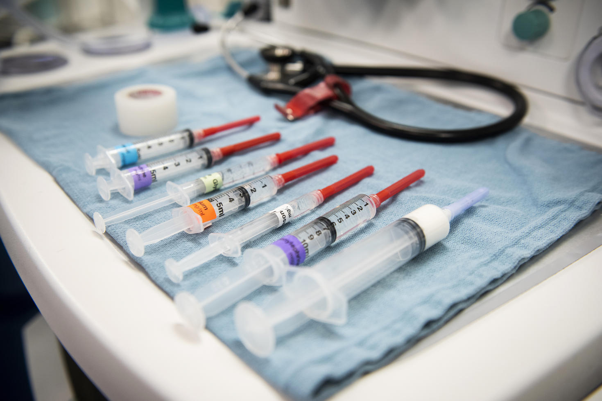

Durante quase toda a trajetória do curso de medicina, tive muita dificuldade de me identificar com alguma especialidade.
Ocorre que a noção das pessoas leigas e dos estudantes ainda no ciclo básico sobre as especialidades médicas são muito parecidas. Temos a tendência de não enxergar o dia-a-dia profissional e nos prendemos em estereótipos. É o fenômeno do meme.
Por exemplo, o aluno de medicina e as pessoas em geral imaginam o cirurgião pela ótica do ato cirúrgico em si, desconhecendo a rotina de visita de enfermaria e consultas em ambulatório que todo cirurgião acaba por precisar fazer. Muitos têm sua rotina quase inteira focada nestas áreas e bem pouco no centro cirúrgico em si.
Cada pessoa é uma. Tem gente que adora ambulatório. Tem gente que adora enfermaria.
Eu acho enfermaria um caos, o cuidado com o paciente é muito descontinuado, muitas condutas são abandonadas e trocadas a depender do plantonista e boa parte dos pacientes tem um movito de internação questionável, no mínimo. As internações contribuem para queda funcional global ou para a redução na expectativa de vida, principalmente de pacientes idosos¹²³.
Não me entenda errado! Eu admiro os profissionais envolvidos na medicina interna e a no processo de hospitalização. São os mais importantes guerreiros da saúde.
Mas, não é pra mim. Meu ideal de cuidado é mais continuado e eu gosto de ver um fim claro na minha atuação.
Sendo assim, as especialidades mais focadas em procedimentos e cuidado continuado subiram na minha prioridade. Dentre elas, a que mais fala a favor do meu perfil é a medicina intensiva. Porém, é na anestesia onde se domina o cuidado do paciente de forma integral por um período de tempo definido – a cirurgia – e há um objetivo claro na conduta. A medicina intensiva, por outro lado, compartilha muitas características de enfermaria.
Por isso, acredito que um caminho interessante pra mim, na medicina, é a anestesiologia.